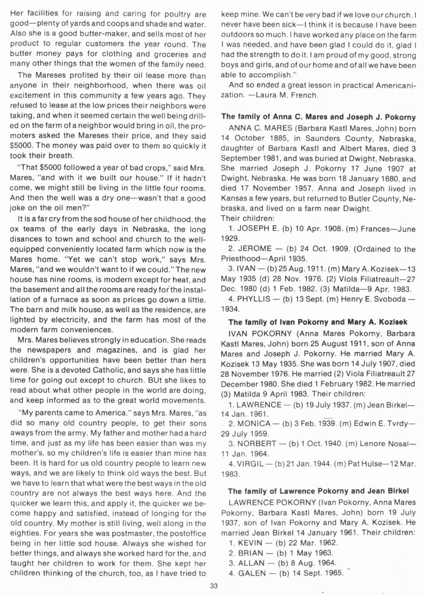

The book · The Family of John Kastl
Page 33 The family of Anna C. Mares and Joseph J. Pokorny


Transcription
Her facilities for raising and caring for poultry are good—plenty of yards and coops and shade and water. Also she is a good butter-maker, and sells most of her product to regular customers the year round. The butter money pays for clothing and groceries and many other things that the women of the family need.
The Mareses profited by their oil lease more than anyone in their neighborhood, when there was oil excitement in this community a few years ago. They refused to lease at the low prices their neighbors were taking, and when it seemed certain the well being drilled on the farm of a neighbor would bring in oil, the promoters asked the Mareses their price, and they said $5000. The money was paid over to them so quickly it took their breath.
"That $5000 followed a year of bad crops," said Mrs. Mares, "and with it we built our house." If it hadn't come, we might still be living in the little four rooms. And then the well was a dry one—wasn't that a good joke on the oil men?"
It is a far cry from the sod house of her childhood, the ox teams of the early days in Nebraska, the long disances to town and school and church to the well-equipped conveniently located farm which now is the Mares home. "Yet we can't stop work," says Mrs. Mares, "and we wouldn't want to if we could." The new house has nine rooms, is modern except for heat, and the basement and all the rooms are ready for the installation of a furnace as soon as prices go down a little. The barn and milk house, as well as the residence, are lighted by electricity, and the farm has most of the modern farm conveniences.
Mrs. Mares believes strongly in education. She reads the newspapers and magazines, and is glad her children's opportunities have been better than hers were. She is a devoted Catholic, and says she has little time for going out except to church. BUt she likes to read about what other people in the world are doing, and keep informed as to the great world movements.
"My parents came to America." says Mrs. Mares, "as did so many old country people, to get their sons aways from the army. My father and mother had a hard time, and just as my life has been easier than was my mother's, so my children's life is easier than mine has been. It is hard for us old country people to learn new ways, and we are likely to think old ways the best. But we have to learn that what were the best ways in the old country are not always the best ways here. And the quicker we learn this, and apply it, the quicker we become happy and satisfied, instead of longing for the old country. My mother is still living, well along in the eighties. For years she was postmaster, the postoffice being in her little sod house. Always she wished for better things, and always she worked hard for the, and taught her children to work for them. She kept her children thinking of the church, too, as I have tried to keep mine. We can't be very bad if we love our church. I never have been sick—I think it is because I have been outdoors so much. I have worked any place on the farm I was needed, and have been glad I could do it, glad I had the strength to do it. I am proud of my good, strong boys and girls, and of our home and of all we have been able to accomplish."
And so ended a great lesson in practical Americanization. —Laura M. French.
The family of Anna C. Mares and Joseph J. Pokorny
ANNA C. MARES (Barbara Kastl Mares, John) born 14 October 1885, in Saunders County, Nebraska, daughter of Barbara Kastl and Albert Mares, died 3 September 1981, and was buried at Dwight, Nebraska. She married Joseph J. Pokorny 17 June 1907 at Dwight, Nebraska. He was born 18 January 1880, and died 17 November 1957. Anna and Joseph lived in Kansas a few years, but returned to Butler County, Nebraska, and lived on a farm near Dwight. Their children:
- JOSEPH E. (b) 10 Apr. 1908. (m) Frances—June 1929.
- JEROME — (b) 24 Oct. 1909. (Ordained to the Priesthood—April 1935.
- IVAN — (b) 25 Aug. 1911. (m) Mary A. Kozisek—13 May 1935 (d) 28 Nov. 1976. (2) Viola Filiatreault—27 Dec. 1980 (d) 1 Feb. 1982. (3) Matilda—9 Apr. 1983.
- PHYLLIS — (b) 13 Sept. (m) Henry E. Svoboda — 1934.
The family of Ivan Pokorny and Mary A. Kozisek
IVAN POKORNY (Anna Mares Pokorny, Barbara Kastl Mares, John) born 25 August 1911, son of Anna Mares and Joseph J. Pokorny. He married Mary A. Kozisek 13 May 1935. She was born 14 July 1907, died 28 November 1976. He married (2) Viola Filiatreault 27 December 1980. She died 1 February 1982. He married (3) Matilda 9 April 1983. Their children:
- LAWRENCE — (b) 19 July 1937. (m) Jean Birkel—14 Jan. 1961.
- MONICA — (b) 3 Feb. 1939. (m) Edwin E. Tvrdy—29 July 1959.
- NORBERT — (b) 1 Oct. 1940. (m) Lenore Nosal—11 Jan. 1964.
- VIRGIL — (b) 21 Jan. 1944. (m) Pat Hulse—12 Mar. 1983.
The family of Lawrence Pokorny and Jean Birkel
LAWRENCE POKORNY (Ivan Pokorny, Anna Mares Pokorny, Barbara Kastl Mares, John) born 19 July 1937, son of Ivan Pokorny and Mary A. Kozisek. He married Jean Birkel 14 January 1961. Their children:
- KEVIN — (b) 22 Mar. 1962.
- BRIAN — (b) 1 May 1963.
- ALLAN — (b) 8 Aug. 1964.
- GALEN — (b) 14 Sept. 1965.
People from the line of descent on this page
- Marie Kunes 1839–1934
- Barbara Kastl 1866–1933
- Anna Cecilia Mares 1885–1981
- Joseph J. Pokorny 1880–1957
- Joseph E. Pokorny b. 1908
- Jerome Pokorny b. 1909
- Ivan Pokorny b. 1911
- Phyllis Pokorny
- Mary A. Kozisek 1907–1976
- Lawrence Pokorny b. 1937
- Monica Pokorny b. 1939
- Norbert Pokorny b. 1940
- Virgil Pokorny b. 1944
- Kevin Pokorny b. 1962
- Brian Pokorny b. 1963
- Allan Pokorny b. 1964
- Galen Pokorny b. 1965
Transcriber’s notes
Left column and top of right column finish the 1922 Emporia Weekly Gazette article on Mrs. Albert Mares (signed Laura M. French); genealogy entries follow in the right column. The Lawrence Pokorny children list continues on the next page (5. ROGER...). Printed oddities kept: 'BUt', 'disances', 'aways from the army', 'worked hard for the, and', 'America." says'. JEROME item has an unclosed parenthesis '(Ordained to the Priesthood—April 1935.' as printed. PHYLLIS birth date lacks a year in print ('13 Sept.'). Small stray marks (a caron-like mark over the z of 'Kozisek' in the Ivan Pokorny paragraph, a mark after 'Mary A.' in the heading, a bar above '1939') appear to be print/scan blemishes.